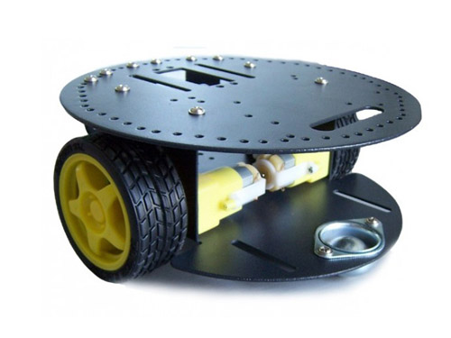
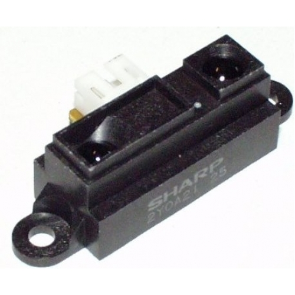
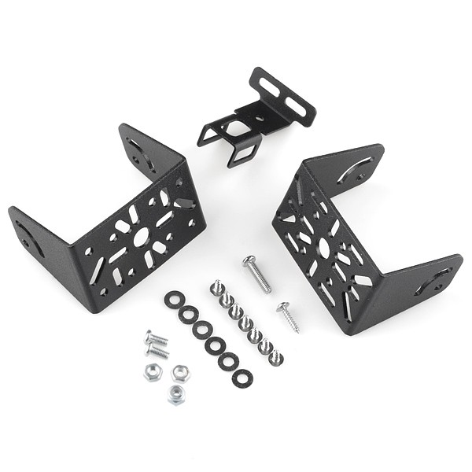
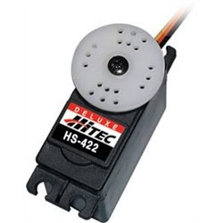
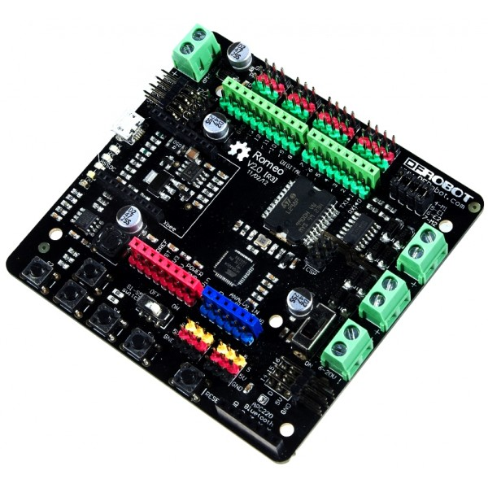

You can find the parts listed here from different suppliers (possibly at a better price, although I have tried hard to find well priced parts).

Arduino 2WD platform/base (also known as a turtle) can be bought from:

Sharp GP2YOA21 10-80cm distance sensor, this looks to be the one that is on the robots used in the workshops but I can't confirm.

Pan and tilt servo bracket for mounting the IR distance sensor

Servo motor to turn the servo bracket. These can be had for much cheaper elsewhere.

The brains of it all! This is essentially an Arduino development board merged with a motor controller board.